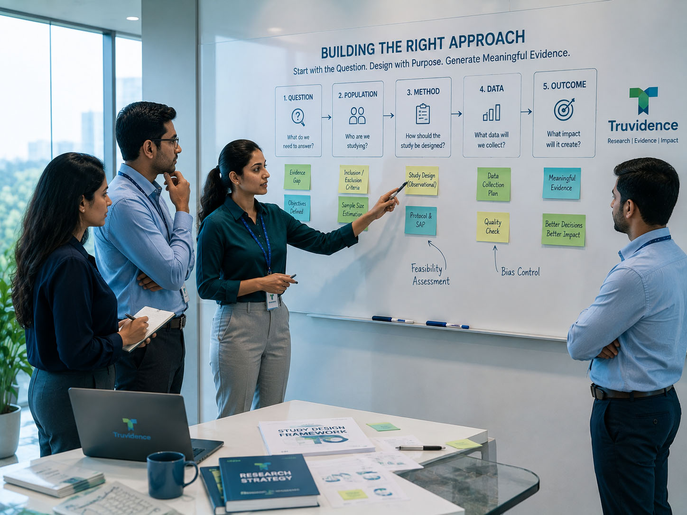
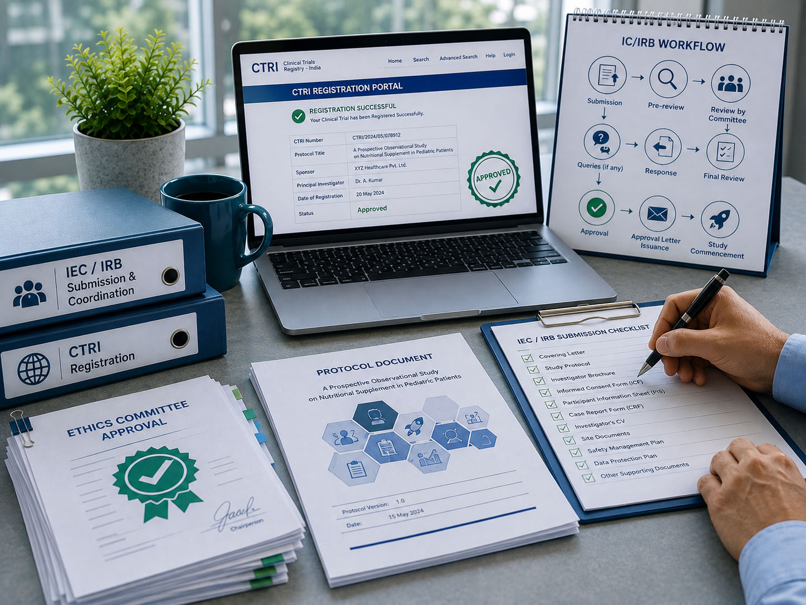

Research support, built around your objective.
From defining the research question and shaping the study approach to research execution, data management, analysis and scientific communication, we bring together the capabilities needed to support meaningful evidence generation.
Different capabilities. One connected research journey.
Research programs often require expertise across multiple disciplines. Our capabilities can be accessed individually or brought together around the same research objective.
Start with the question. Build the right approach.
A strong research program begins with clarity about what needs to be understood. We support the development of research questions, study concepts, and scientifically appropriate approaches that provide a clear foundation for the work that follows.
Discuss Your Research
- Literature review
- Evidence gap assessment
- Study feasibility and conceptualization
- Research Strategy
- Study design
Reliable data needs a disciplined process.
Data quality is shaped throughout the research process. We support the design and management of data processes that help transform research information into reliable, analysis-ready datasets.
Discuss Your Research- Paper CRF & eCRF Design
- Electronic data capture (EDC)
- Data entry and validation
- Database cleaning and lock
- Adverse event documentation support
Scientific documentation that supports the research.
Well-developed scientific documents provide clarity and consistency throughout the research process. We support the development of essential documents that support scientific and operational requirements of the study.
Discuss Your Research- Clinical study protocols
- Informed Consent Form (ICF)
- Patient Information Sheet (PIS)
- Investigator brochure (IB) support
- Clinical study reports (CSR)
Turning data into scientific understanding.
Appropriate statistical planning and analysis help ensure that research data can be interpreted responsibly. We provide statistical and programming support across the planning, analysis and interpretation stages of research.
Discuss Your Research- Statistical consulting
- Sample size and power calculations
- Statistical analysis planning
- Interim and final statistical analysis
- Statistical analysis reports
Bringing research plans into practice.
From study preparation through ongoing coordination, clinical research requires disciplined operational support. We help connect the activities, people, and processes needed to support research implementation.
Discuss Your Research- Site identification, feasibility and selection
- Site contracts, initiation, training and onboarding
- Subject recruitment and follow-up
- Study tracking and monitoring
- Site staffing (CRA, CRC and research staff)
Support for the processes that help research move forward.
Research requires appropriate documentation and processes to meet ethics and registration requirements. We help coordinate the requirements needed to support research approvals and registration.
Discuss Your Research
- IEC/IRB Submission and Coordination
- CTRI Registration
Turning research findings into scientific knowledge.
Research creates greater value when its findings can be clearly communicated to the scientific community. We support manuscript development and journal publication, helping translate research findings into credible scientific publications.
Discuss Your Research- Research manuscript writing
- Journal publication support
Different research settings. Different evidence needs.
Our capabilities can support a range of clinical, healthcare and evidence-generation programs, with the approach shaped around the research question and the context in which evidence is needed.
Clinical Studies
- Investigator-initiated studies
- Prospective clinical studies
- Post-marketing studies
- Publication-driven clinical research
Observational Research
- Prospective observational studies
- Retrospective studies
- Cross-sectional studies
- Longitudinal studies
Real-World Evidence
- Real-world clinical outcomes
- Treatment and practice patterns
- Patient characteristics and outcomes
- Healthcare utilization research
Clinical Outcomes Research
- Clinical outcome studies
- Patient-reported outcomes
- Quality-of-life research
- Comparative effectiveness research
Data-Driven Research
- Medical record–based research
- Registry and database research
- Secondary data analysis
- Longitudinal data analysis
Have a research question?
Tell us about your research question, evidence need, or the challenge you are looking to address. We can start by exploring the right way forward.